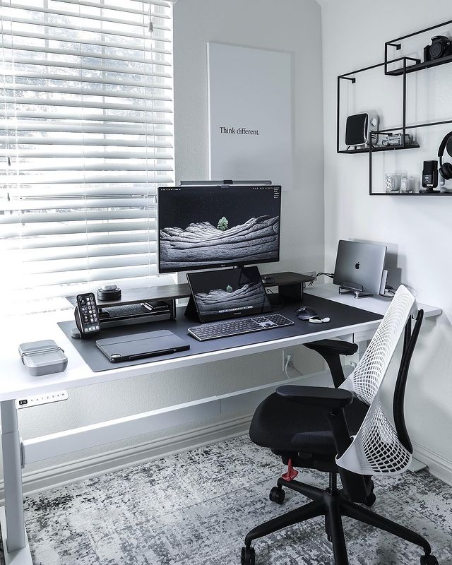

This Boba Fett-themed setup does it for us! It looks clean but not sterile, thanks to the wood wall panels. Combine that with some warm desk lights, and you’ve got a seriously cozy battlestation ideal to do double-duty as an office space. One thing it’s missing? Boba Fett posters from Displate!
In a world of extravagant battlestations, minimalist gaming rooms often fly under the radar. But not on our watch! Less is more in this understated space from nvzion. From the distressed carpet to the minimal wall art, he uses the black-and-white color scheme to great effect!
This sleek, dark space belongs to an automotive engineer and is a great example of how you can incorporate your passions and interests into your gaming station. We love how the wooden desktop and white storage drawers pop against the black accent wall!
Pbachviet

Boba Fett Gaming Room Setup